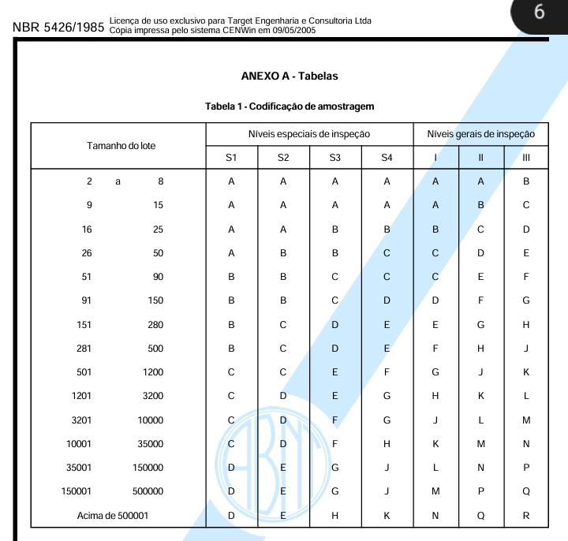
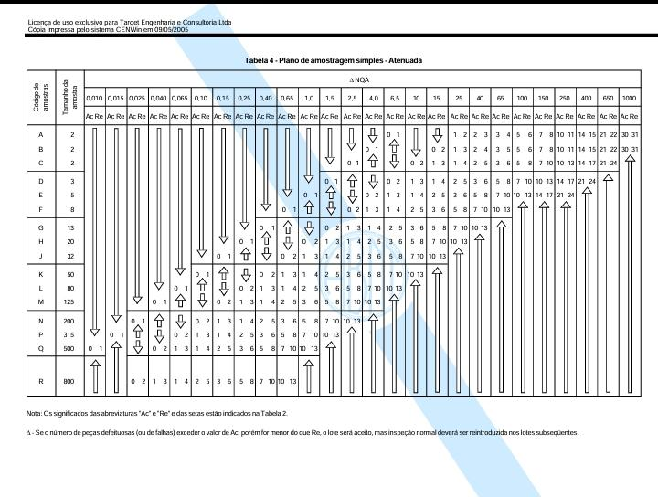

Tabela de referência (somente consulta) com subcomponentes, desenhos/normas de referência e medidas/tolerâncias pré-preenchidas.
Edição e exclusão são exclusivas do perfil Admin. Esta aba ainda não cruza dados com Inspeções ou Estoque.
Tabelas de amostragem — NBR 5426/1985
Referência visual para consulta
Como usar: primeiro consulte a Tabela 1 para encontrar a letra-código conforme o tamanho do lote e o nível de inspeção. Depois consulte a Tabela 4 para o plano de amostragem simples atenuada, localizando a amostra e os critérios Ac/Re conforme o NQA.


Clique em uma tabela para abrir a imagem maior em uma nova aba.
Calculadora de amostragem
Nível geral de inspeção I (Tabela 1) · Plano simples atenuado com NQA 2,5% (Tabela 4)
Medidas e tolerâncias — Subcomponentes
0 registros